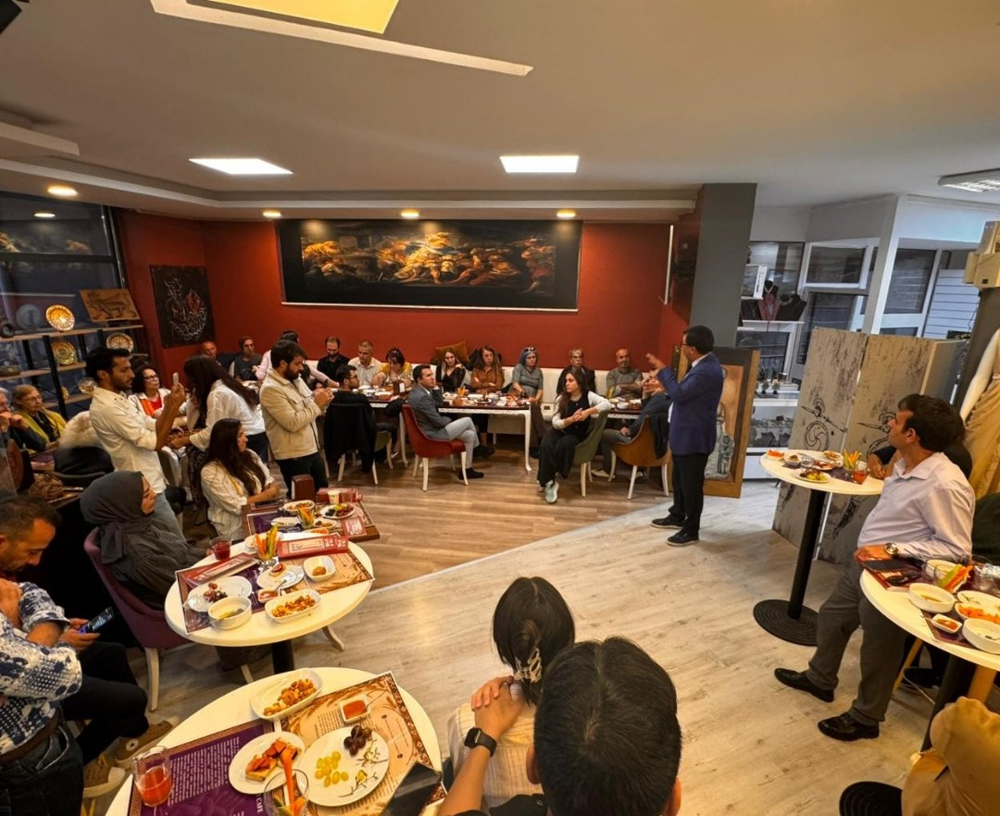

Etkinliklerimiz

Gordion Atölyesi ve Masal Günleri
📅 25 Temmuz 2025
🕒 15:30
Çocuklar ve yetişkinler için Gordion temalı heykel, resim ve masal anlatımı atölyeleri büyük ilgi gördü. Yaratıcılık ve tarih dolu, unutulmaz bir hafta sonu etkinliği...
Devamını Oku →
Ankara Tur Rehberleri Odasını Ağırladık
📅 25 Temmuz 2025
🕒 15:30
Ankara Tur Rehberleri Odasını Ağırladık

Defile
📅 25 Temmuz 2025
🕒 15:30
Gordion Tanıtım Merkezi açılışında gerçekleştirilen defile etkinliğimizde, gelenelsel Frig kıyafetleri tanıtımı gerçekleştirildi. Cafemiz tarafından hazırlanan Frig menüsü ve yöresel yiyecekler ikram edildi.

Kahvaltı Etkinliği
📅 25 Temmuz 2025
🕒 15:30
Cafemizde kahvaltı etkinliği düzenledik.